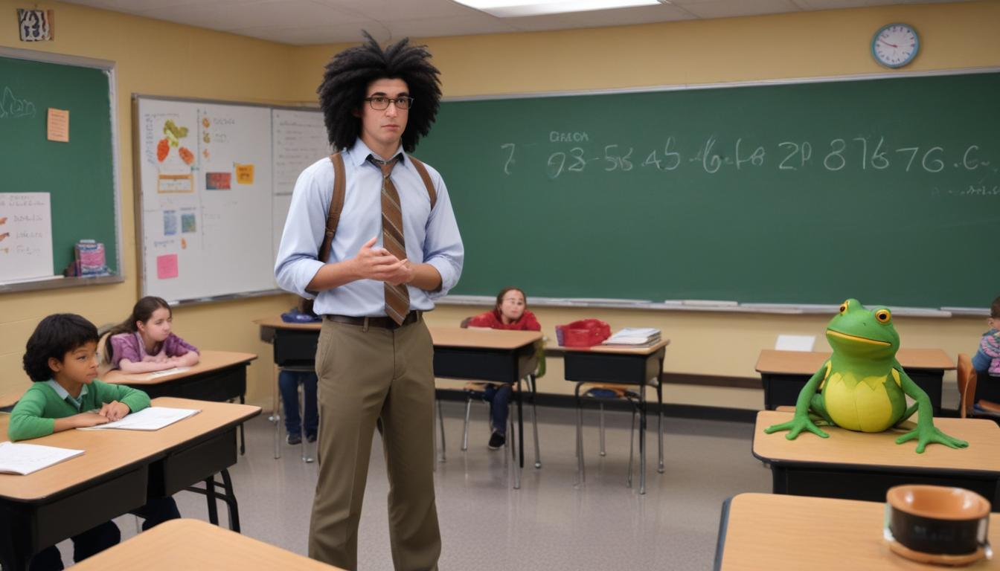

THE GUARDIANS OF LORE
2. SOY.
I was sitting in class when I first saw it.
I didn’t see the frog for the rest of the day. Maybe it stayed in Miss Weaver’s hair or maybe it jumped back through the window when I wasn’t looking. All day long, I expected her to find it and let out a scream, but she never did.
When the bell rang, I ran out of the school onto the side of the grass that had the most bushes. I had seen frogs hide in there before, but there was no sign of any. Truthfully, I wouldn’t have known what to do with the frog if I had found it. Would I capture it? Would I ask it questions? If I was caught talking to a frog outside the school, I think people might finally start to remember me, but in a #donttalktothefrogkid kind of way.
I liked most of the kids in my class just fine, but I was only really close with one. His name was Soy, and he was definitely, without a doubt, my best friend. Soy had kind of reddish-blond hair and a round face. He and I had been friends since preschool, and I knew that I could talk to him about anything. The downside to that was that he also felt he could talk to me about anything. Since he had eight older brothers and two older sisters, his questions were always about things that I didn’t understand and didn’t want to.
Here’s how it would usually go: Soy’s brothers would talk about older kids things, and then make fun of him for not getting it. He would ask me about it, and we’d look it up. It only took a few Google searches for me to get banned from using the Internet with Soy.
The bottom line was that if I was going to tell anyone about the frog, it would be Soy. I decided that our walk home would be the best chance.
“Did you see anything outside today during math?” I asked Soy as we started walking.
“What do you mean? On the grass?” he asked, jumping over cracks in the sidewalk.
“I mean right outside the window. Like right up against it,” I answered.
“Like a person?” he asked, still hopping.
Soy sat in the row farthest from the window, so it would’ve been possible, but still weird, for someone to walk by without him noticing.
“No. It’s more like… I saw a frog up against the window," I explained.
“Awesome,” he said.
“Yeah, but it wasn’t a normal frog. It opened the window and it came in the classroom and jumped on Miss Weaver’s shoulder and it jumped inside her hair,” I spit out.
Soy stopped jumping and looked at me.
“That happened… today?” he asked.
“Yeah, I mean I’m pretty sure. And when I thought I might be making it up, the frog nodded at me,” I said.
Soy looked confused. I thought I heard something move in the tree above us, but Soy answered before I could look.
“It nodded at you? I don’t even think frogs have necks, do they?” said Soy.
“This one did, I guess. I mean most frogs don’t wear glasses either, but it had those too,” I explained.
All of a sudden, Soy seemed a couple steps further away.
“The frog was wearing glasses?” he asked suspiciously.
“Yes,” I shot back.
“Why would someone go around putting glasses on frogs?” he asked.
"I dunno… maybe it bought them on its own,” I replied.
Soy was standing at least ten steps away now.
.jpeg) “Right… Well, maybe Miss Weaver will let us look in her hair tomorrow, and we can ask the frog where it got ‘em… So, I think I’m just gonna head back home today instead of coming over. My mom has lots of stuff for me to do. See you later!” Soy said, turning to run away.
“Soy!” I yelled. “Stop right there. I can prove the frog is real.”
“Oh yeah? How?” he asked with an eye roll.
“It’s sitting on your backpack,” I said.
“Right… Well, maybe Miss Weaver will let us look in her hair tomorrow, and we can ask the frog where it got ‘em… So, I think I’m just gonna head back home today instead of coming over. My mom has lots of stuff for me to do. See you later!” Soy said, turning to run away.
“Soy!” I yelled. “Stop right there. I can prove the frog is real.”
“Oh yeah? How?” he asked with an eye roll.
“It’s sitting on your backpack,” I said.